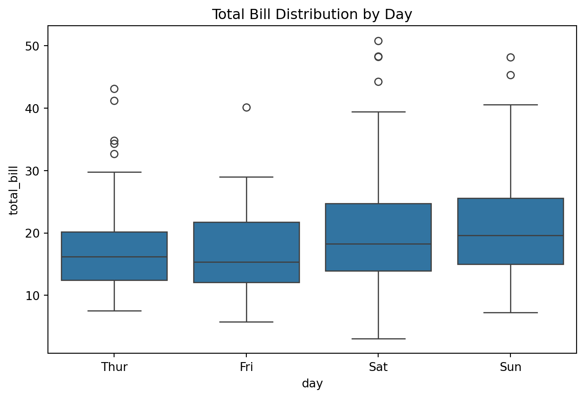
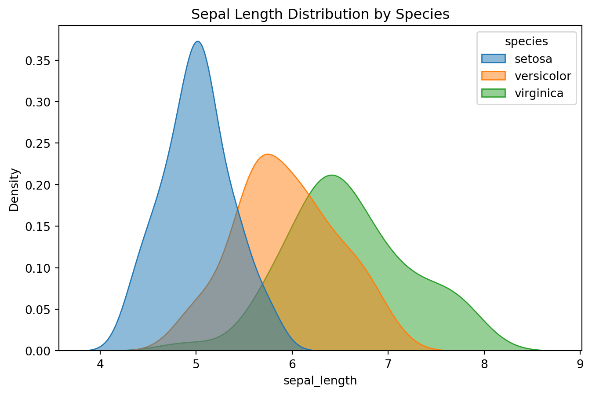
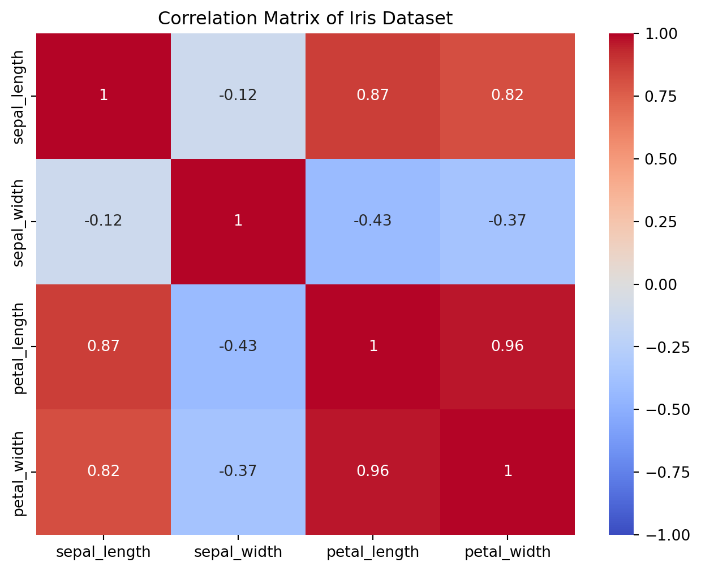
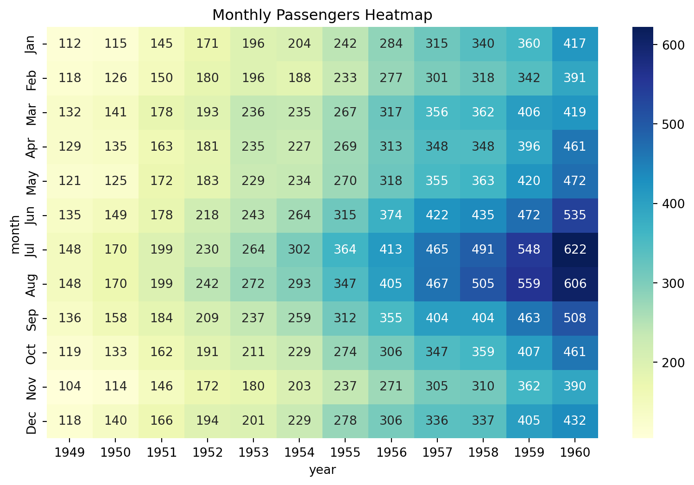
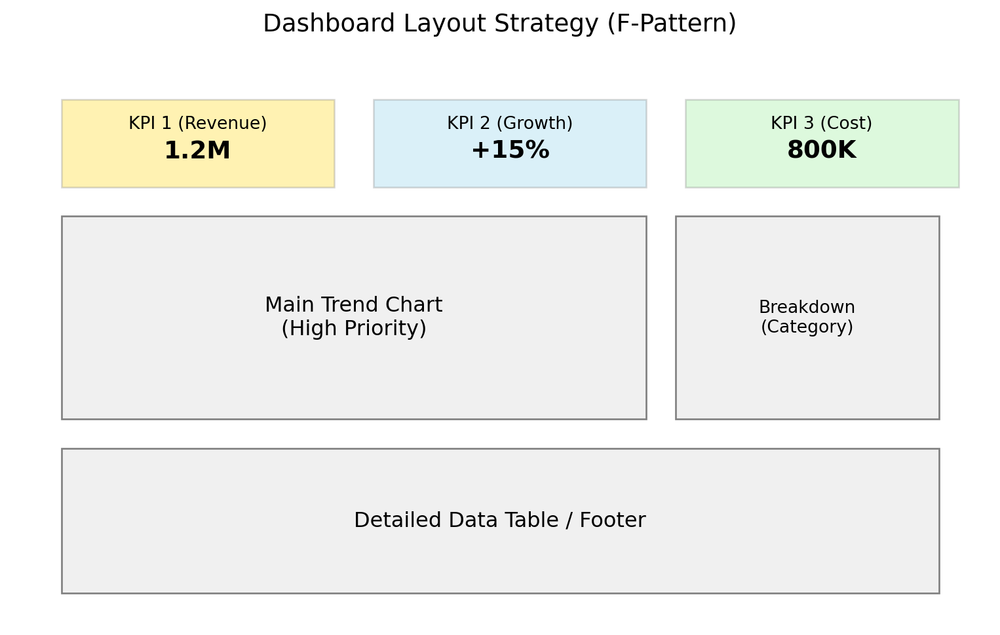

資料視覺化與報告
資料視覺化與報告 (Data Visualization & Reporting) 是溝通分析結果的有效手段。一張好的圖表勝過千言萬語。
視覺化原則與工具
掌握視覺化原則與工具 (Visualization Principles and Tools) 是製作優秀圖表的關鍵。
設計原則
- 以閱讀者為中心 (User-Centric)：根據目標對象（如工程師、高階主管）的需求設計，聚焦其關注的指標 (KPI)。
- 選擇正確的圖表：
- 比較 (Comparison)：長條圖 (Bar Chart)、分組長條圖。
- 趨勢 (Trend)：折線圖 (Line Chart)、面積圖 (Area Chart)。
- 分佈 (Distribution)：直方圖 (Histogram)、箱型圖 (Box Plot)、核密度估計圖 (KDE)。
- 關係 (Relationship)：散點圖 (Scatter Plot)、熱力圖 (Heatmap)、相關係數矩陣 (Correlation Matrix)。
- 組成 (Composition)：圓餅圖 (Pie Chart)、堆疊長條圖 (Stacked Bar Chart)。
- 簡潔原則 (Simplicity)：去除不必要的裝飾（Chart Junk），如過多的網格線、3D 效果。
- 完形心理學 (Gestalt Principles)：利用人類的視覺感知特性。
- 鄰近性 (Proximity)：距離近的物體被視為一組。
- 相似性 (Similarity)：顏色、形狀相似的物體被視為一組。
- 色彩理論 (Color Theory)：
- 順序色 (Sequential)：單一顏色的深淺變化，用於數值大小（如熱力圖）。
- 發散色 (Diverging)：兩種對比色，用於正負值或偏差（如紅藍對比）。
- 分類色 (Categorical)：不同顏色，用於區分不同類別。
進階圖表詳解 (Advanced Charts in Detail)
以下針對幾種常用的進階圖表進行詳細說明與示範：
1. 箱型圖 (Box Plot)
- 用途：用於顯示數據的分佈情況，特別是分散程度和異常值 (Outliers)。
- 組成：包含最小值、第一四分位數 (Q1)、中位數 (Q2)、第三四分位數 (Q3) 和最大值。
- 適用時機：比較多組數據的分佈差異，或檢測異常值時。
2. 核密度估計圖 (Kernel Density Estimation, KDE)
- 用途：估計連續變數的機率密度函數 (PDF)，是直方圖的平滑版本。
- 適用時機：觀察數據的分佈形狀（如常態分佈、雙峰分佈、偏態）時，比直方圖更直觀。

3. 相關係數矩陣 (Correlation Matrix)
- 用途：展示多個變數兩兩之間的線性相關程度。
- 適用時機：特徵選擇 (Feature Selection) 或探索變數間關係時。通常搭配熱力圖呈現。

4. 熱力圖 (Heatmap)
- 用途：使用顏色深淺來表示二維矩陣中的數值大小。
- 適用時機：展示矩陣數據（如混淆矩陣、相關矩陣、時間-類別數據）的模式或聚類。

視覺化工具 (Visualization Tools)
根據不同的應用場景，選擇合適的工具至關重要：
- 商業智慧 (BI) 與儀表板：
- Tableau：強大的拖拉式介面，適合跨資料源整合與互動式分析。
- Power BI：與 Microsoft 生態系（Excel, Azure）整合佳，適合企業內部報表。
- Metabase：開源且易於架設，適合快速建立原型與內部數據分享。
- Apache Superset：支援 SQL 查詢與大規模數據視覺化，適合數據工程師。
- 程式語言繪圖庫：
- Python：
- Matplotlib：基礎繪圖庫，適合靜態報表。
- Seaborn：基於 Matplotlib，語法更簡潔，美觀度更高。
- Plotly：支援互動式繪圖（縮放、懸停），適合網頁展示。
- GeoPandas：專用於地理空間數據處理與繪圖。
- R：
- Shiny：用於建構互動式網頁應用程式 (Web Apps)。
- Python：
- 時序與監控：
- Grafana：專注於時序數據監控（如 CPU 使用率、IoT 感測器），常搭配 InfluxDB, Prometheus。
- Kibana：專用於 Elasticsearch 數據分析，適合日誌 (Log) 分析。
- 地圖與空間分析：
- Mapbox：提供客製化互動地圖服務。
產業應用案例 (Industry Application Scenarios)
不同產業對視覺化有不同的需求與側重點：
零售與電商 (Retail & E-commerce)
- 目標：分析顧客分群、銷售趨勢、熱銷商品。
- 常用圖表：
- 折線圖：銷售額隨時間的趨勢，識別週期性（如週末熱銷）。
- 長條圖：比較不同產品類別或地區的銷售表現。
- 熱力圖：分析地區銷售熱區，輔助行銷投放。
- 工具：Power BI, Tableau, Plotly.
製造業 (Manufacturing)
- 目標：設備運轉監控、預測性維護 (Predictive Maintenance)、產能優化。
- 常用圖表：
- 折線圖：監控感測器數據（如溫度、振動）的即時變化，偵測異常突增。
- 儀表圖 (Gauge)：直觀顯示產能達成率或設備健康度。
- 熱力圖：顯示設備故障風險分佈。
- 工具：Grafana (即時監控), Kibana (日誌分析).
金融與詐欺偵測 (Finance & Fraud Detection)
- 目標：即時偵測異常交易、風險控管、客戶行為分析。
- 常用圖表：
- 散佈圖：展示交易金額與頻次的關係，識別離群點（潛在詐欺）。
- 熱力圖：顯示風險評分分佈。
- 折線圖：監控客戶活動的時間序列，偵測突變（如異地登入）。
- 工具：Tableau, Metabase, Superset.
健康與醫療 (Healthcare)
- 目標：病歷視覺化、診療路徑追蹤、資源分配。
- 常用圖表：
- 折線圖：追蹤病患生理指標（如血壓、血糖）的變化。
- 堆疊長條圖：分析不同疾病類別的治療頻次。
- 時間軸圖 (Timeline)：呈現診療事件的順序與進程。
- 工具：Shiny (互動式醫療儀表板), Tableau.
智慧城市與物聯網 (Smart City & IoT)
- 目標：交通監控、環境污染監測、公共設施管理。
- 常用圖表：
- 地理熱力圖：展示交通擁堵或空氣污染的空間分佈。
- 互動式地圖：支援縮放與篩選，探索特定區域數據。
- 折線圖：展示擁堵或污染的時間趨勢。
- 工具：GeoPandas, Mapbox, Grafana.
建立有效的儀表板
建立有效的儀表板 (Creating Effective Dashboards) 不僅是將圖表堆疊，而是要設計一個能輔助決策的資訊系統。
1. 佈局策略：F 型瀏覽模式 (F-Pattern Layout)
研究顯示，使用者瀏覽網頁或儀表板時，視線通常呈現 “F” 型軌跡：
- 頂部水平掃描：閱讀標題和關鍵指標 (KPIs)。
- 中間水平掃描：閱讀主要圖表或內容。
- 左側垂直掃描：尋找導航或次要資訊。
因此，最重要的資訊（如總營收、核心 KPI）應放在左上角或頂部，而詳細數據或輔助圖表則放在下方或右側。

2. 關鍵績效指標 (KPIs) 設計
KPI 卡片通常採用 BAN (Big Angry Number) 的形式，即以大字體顯示核心數字。
- 清晰性：數字要大且易讀。
- 情境 (Context)：單看數字沒有意義，需提供比較基準。
- 與目標比較：達成率 85%。
- 與歷史比較：MoM (月增率) +5%, YoY (年增率) -2%。
- 視覺提示：使用 綠色/紅色 箭頭表示 正向/負向 趨勢。
3. 互動性與鑽取 (Interactivity & Drill-down)
現代儀表板應具備探索能力，讓使用者從「總覽」深入到「細節」。
- 篩選器 (Filters)：允許使用者按時間、地區、產品線過濾數據。
- 鑽取 (Drill-down)：點擊某個數據點（如「亞洲」），展開該區域的詳細數據（如「日本」、「台灣」）。
- 懸停提示 (Tooltips)：滑鼠移過數據點時顯示精確數值。
Mermaid 流程圖：互動式分析路徑
flowchart LR
A[總覽儀表板 Dashboard Overview] -->|篩選 Filter| B[特定區域/時間 Regional View]
B -->|點擊 Click| C[詳細報表 Detailed Report]
C -->|導出 Export| D[原始數據 Raw Data]
4. 用數據說故事 (Storytelling with Data)
儀表板不只是數據的陳列，更是一個故事的敘述。
- 情境 (Context)：了解聽眾是誰（Who），他們關心什麼（What），以及你希望他們做什麼（How）。
- 注意力 (Attention)：利用「前注意屬性」(Preattentive Attributes) 如顏色、大小、位置，引導聽眾視線聚焦在異常或重要趨勢上。
- 行動 (Action)：每個圖表都應隱含一個行動建議（如：「庫存過低，需補貨」）。